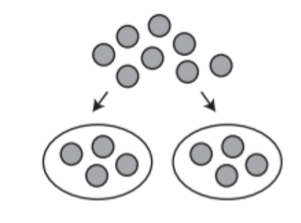

Division is when you take an amount and distribute evenly across a certain number of things. It is represented by a ÷ or a / symbol. This can be like splitting a number of pizza slices to a certain number of people so everyone gets the same amount.
The initial amount is called the dividend, the number it is being divided by is the divisor, and the answer is the quotient.
Here's an example to help visualize division. If you have 8 marbles, and you want to distribute it evenly across 2 people, how many would each person get. You can find this by finding how many groups of 2 fit into 8, or 2 * ? = 8. The answer would be 4. Therefore, 8 / 2 = 4.
Often, numbers aren't going to divide perfectly. For instance, when dividing 8 by 3, there is not an exact number of groups of 3 that fit into 8. This is where remainders come in. A remainder is the amount left over after dividing. It is represented by writing the letter R after the quotient, followed by the remainder itself.
For instance, when dividing 8 by 3, 3 fits into 8 a total of 2 times. If you tried to add a third 3, then you would get 9, which is over 8. Since it only fits into 8 a total of 2 times, do 3 * 2 = 6. Now, take the dividend and subtract it by the product. In this case, that would be subtracting 8 by 2. 8 - 6 = 2, so the remainder is 2 Your final is 8 / 3 = 2 R 2.
6 / 2 = ?
12 / 3 = ?
7 / 2 = ?
15 / 1 = ?
20 / 20 = ?
6 / 2 = 3
12 / 3 = 4
7 / 2 = 3 R 1
15 / 1 = 15
20 / 20 = 1
For more help, see Khan Academy's Video on Division.